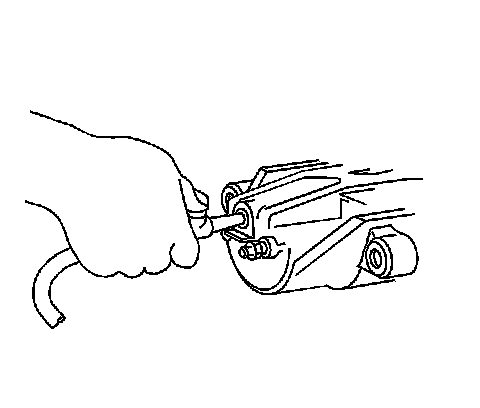
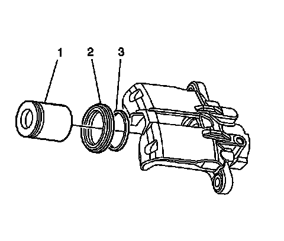
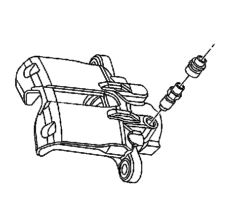
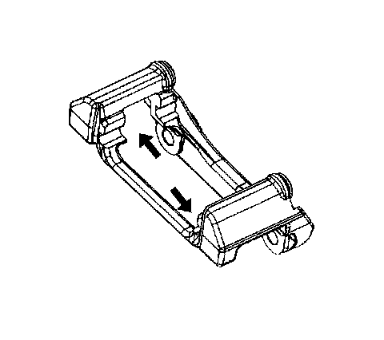

Rear Brake Caliper Overhaul
Rear Brake Caliper Overhaul
Tools Required
* J 8092 Handle Driver
* J 46275 Caliper Boot Seal Installer
Caution: Refer to Brake Fluid Irritant Caution (Brake Fluid Irritant Caution) .
Notice: Refer to Brake Fluid Effects on Paint and Electrical Components Notice (Vehicle Damage Warnings) .
Disassembly Procedure
Caution: Do not place your fingers in front of the piston in order to catch or protect the piston while applying compressed air. This could result in serious injury.
Important:
* Replace all the components included in the repair kits used to service this brake caliper.
* Lubricate the rubber parts with Delco Supreme 11(R), GM P/N 12377967 (Canadian P/N 992667) or equivalent DOT-3 brake fluid from a clean, sealed brake fluid container to make assembly easier.
* If any hydraulic component is removed or disconnected, it may be necessary to bleed all or part of the brake system.
* The torque values specified are for dry, non-lubricated fasteners.
* Perform the service operations on a clean bench, free from all mineral oil materials.
1. Remove the brake caliper from the vehicle. Refer to Rear Brake Caliper Replacement (JE5, JL9) (Rear Brake Caliper Replacement (JE5, JL9)) .

Notice: Use clean cloths to pad interior of caliper housing during piston removal. Use just enough air to ease the pistons out of the bores. If the pistons are blown out, even with the padding provided, it may be damaged.
2. Remove the brake caliper piston from the caliper bore by directing low pressure compressed air into the caliper bore through the brake fluid inlet hole.

3. Using a small wooden or plastic tool, remove the piston dust boot seal (2) from the seal counter-bore in the caliper and discard the boot seal.
4. Using a small wooden or plastic tool, remove the piston seal (1) from the caliper bore and discard the piston seal.

5. Remove the brake caliper bleeder valve cap.
6. Remove the brake caliper bleeder valve.

Important: Do not use abrasives to clean the brake caliper piston.
7. Inspect the brake caliper mounting bracket guide surfaces for corrosion and wear. Remove and replace the brake caliper mounting bracket if damaged or worn.
8. Clean the brake caliper piston bore and seal counter-bore, with denatured alcohol, or equivalent.
9. Clean the brake caliper piston with denatured alcohol, or equivalent.
10. Dry the caliper piston bore and counter-bore, with non-lubricated, filtered air.
11. Dry the caliper piston with non-lubricated, filtered air.
12. Inspect the caliper bore for cracks, scoring, pitting, and excessive corrosion.
13. If light corrosion is present in the caliper bore, attempt to remove the imperfection with a fine emery paper. If the imperfection cannot be removed, replace the caliper assembly.
14. If cracks, scoring, pitting, and excessive corrosion are present in the caliper bore, replace the caliper assembly.
15. Inspect the caliper piston for cracks, scoring, and/or damage. Replace the caliper piston if any of these conditions exist.
Assembly Procedure
Notice: Refer to Fastener Notice (Fastener Notice) .
1. Install the brake caliper bleeder valve.
Tighten the brake caliper bleeder valve to 14 N.m (124 lb in).
2. Install the brake caliper bleeder valve cap.
3. Lubricate the new piston seal (3) with Delco Supreme 11(R), GM P/N 12377967 (Canadian P/N 992667) or equivalent DOT-3 brake fluid from a clean, sealed brake fluid container.
4. Install the new lubricated piston seal (3) into the caliper bore seal groove.
5. Make sure the seal is not twisted.
6. Lubricate the brake caliper bore and the piston (1) with brake fluid.
7. Install the caliper piston (1) into the caliper bore.
8. Install the new piston dust boot seal (2) over the piston.
9. Assemble the J 8092 and the J 46275 .
1. Using the J 8092 and the J 46275 fully seat the dust boot seal (2) into the caliper.
2. Make sure the caliper piston dust boot (2) is properly seated into the groove in the brake caliper bore.
10. Install the caliper to the vehicle. Refer to Rear Brake Caliper Replacement (JE5, JL9) (Rear Brake Caliper Replacement (JE5, JL9)) .